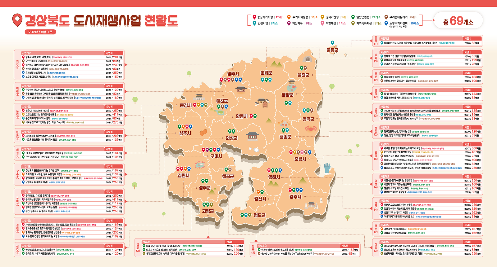

창업은 "좋은 아이템을 파는 일"이 아니라 "누군가의 불편을 반복 가능한 방식으로 푸는 일"입니다. 관광벤처는 그 불편이 여행의 여정 어딘가에 있는 사업입니다.
- 학생용 「이 페이지를 읽는 법」 안내서 ⤓ 혼자 읽는 순서. 지금 자기 상태에 따른 세 갈래 진입점(과제 20분 / 낼 곳 찾기 15분 / 아이템 없음 25분), 공모를 전국 · 초광역 · 광역·시·원도심 층위로 견주는 법, Ⓛ 여섯 층위를 읽는 순서, 그리고 오늘 할 세 가지. 인쇄해 옆에 두고 이 페이지를 여십시오.
- 교수자용 수업 소개 자료 — 「가지치기 트리」 ⤓ 수업에서 소개하는 순서. 「관광에서 어떤 문제를 발견했는가」에서 갈라져 내려가는 아이디어 형성 가지치기 도해, 홈페이지를 스크롤하며 짚는 흐름, 전체 섹션 안내. 학생에게 "무엇을 만들래?"보다 "여행하며 불편했던 것은?"을 먼저 묻자는 자료입니다.
- 이론(01~06장)
- 창업 사례
- 공모·지원사업
- 곁들여 보기
- 관련 링크
01관광벤처란
관광벤처란 ICT·콘텐츠·새로운 서비스 방식으로 관광의 문제를 푸는 혁신형 창업을 말합니다. 전통적인 여행사·숙박업과 달리, 기술과 아이디어로 기존 방식을 바꾸려 한다는 점이 다릅니다.
유형은 대개 셋으로 나뉩니다.
- 시설·공간형체험 · 숙박 · 복합공간
- 플랫폼·중개형예약 · 매칭 · 큐레이션
- 콘텐츠·데이터형가이드 · 미디어 · 분석 서비스
앞선 모듈의 스마트 관광·빅데이터가 곧 관광벤처의 도구가 됩니다.
02아이디어는 문제에서 나온다
초보 창업이 가장 자주 넘어지는 지점은 "내가 만들고 싶은 것"에서 시작한다는 것입니다. 순서를 뒤집어야 합니다.
- WHO누구의 문제인가고객을 구체적으로. 예: 부산을 처음 찾는 외국인 개별 여행자.
- WHAT어떤 문제인가진짜 불편을 한 문장으로. 예: 언어 장벽으로 로컬 경험에 닿지 못한다.
- WHY NOW왜 지금인가시장·기술·규제의 변화가 그 문제를 풀 때가 됐는가.
좋은 문제 정의는 이미 절반의 해답입니다. 이 사이트의 출발점도 "친절한 로컬 가이드와 여행자를 잇는다"는 한 문장이었습니다.
03비즈니스 모델 — 어떻게 돈이 도는가
사업이 되려면 가치가 돈의 흐름으로 이어져야 합니다. 비즈니스 모델 캔버스는 이를 아홉 칸으로 정리하는 도구지만, 핵심은 세 가지입니다.
- 무엇을 주는가가치 제안고객이 기꺼이 돈을 낼 만한 분명한 이득. "부산의 웰니스를 로컬 가이드와 느리게 경험한다"처럼.
- 누구에게, 어떻게 닿는가고객·채널타깃 고객과 그들을 만나는 경로(검색·SNS·제휴·재방문).
- 어떻게 버는가수익 모델상품 판매·중개 수수료·구독·광고·B2B 제휴 등. 하나에 기대지 말고 여러 축을 설계한다.
04만들기 전에 검증하라 — 린 스타트업
가장 비싼 실수는 아무도 원하지 않는 것을 완벽하게 만드는 것입니다. 그래서 순환이 필요합니다.
- 만든다MVP · 최소기능제품핵심 가치만 담은 최소 버전으로 빠르게 시장에 묻는다.
- 묻는다고객 검증인터뷰·사전예약·랜딩페이지로 "정말 돈을 낼까"를 확인한다.
- 배운다측정·학습반응을 데이터로 읽고(02 「빅데이터 분석」), 방향을 유지하거나 바꾼다(피벗).
이 웹사이트 자체가 하나의 MVP입니다 — 큰 예산 없이 정적 사이트로 가치 제안을 세상에 먼저 내걸고, 후기와 문의로 반응을 확인하는 방식입니다.
05혼자 하지 않는다 — 창업 생태계와 지원
관광벤처는 공공 지원이 비교적 두터운 분야입니다. 아이디어 단계부터 활용할 수 있습니다.
- 관광 전용관광벤처사업 공모전·관광기업 지원한국관광공사 중심의 발굴·육성 프로그램.
- 범부처예비·초기 창업 지원예비창업패키지, 초기창업패키지 등 정부 지원 사업.
- 키우고 투자보육·투자창업보육센터, 액셀러레이터, TIPS·엔젤·벤처투자.
- 가까운 곳지역 연계부산 지역 창업 지원 기관·관광기업지원센터와의 협업.
-
사업계획서·IR 피칭 배우기 — 사람에게
02~04장의 문제 정의·비즈니스 모델·시장 검증을 실제 지원 서류로 옮기는 단계에서 곁에 둘 자료입니다.
두 자료가 각각 무엇인가
이명신 IR피칭 멘토 — 사업계획서·IR피칭 실전 블로그 — IR 피칭과 사업계획서 작성을 전문으로 가르치는 멘토의 블로그. 「합격하는 사업계획서 작성법」, 예비창업패키지 등 정부지원사업 공고 정리, 투자자가 비즈니스 모델에서 먼저 확인하는 것, 실제 투자 유치 사례 분석이 꾸준히 올라옵니다. 05장의 창업 지원 사업에 실제로 지원할 때 곁에 두고 볼 만한 자료입니다. 나도 합격할 수 있는 예비창업패키지 사업계획서 작성하기 (온라인 강의) — 예비창업패키지 사업계획서 작성을 주제로 한 온라인 클래스. 위 성심당 영상을 만든 티엔티스피치의 강의로, 같은 크리에이터가 사업계획서 예시·피치덱 샘플 클래스도 함께 운영합니다(유료). -
AI로 공고 찾고 사업계획서 쓰기 — 본문 · 실습 키트 · 원 출처
앞에서 "공고는 찾는 사람에게만 보인다"고 했는데, ①의 마지막 단계는 그 찾는 일 자체를 매일 아침 자동으로 돌리는 방식입니다. ②에 프롬프트와 코드가 실물로 공개돼 있습니다. 다만 AI가 만든 것은 어디까지나 초안입니다.
세 자료가 각각 무엇인가
① 정부지원사업, AI로 공고 스크리닝부터 사업계획서 초안 작성까지 끝내는 법 — 아래 AI 자동화 키트의 본문에 해당하는 글입니다. 의료기기 스타트업에서 연평균 50억원 규모의 정부지원사업 서류를 써 온 실무자(필명 '신대리')가, 2주 걸리던 초안을 3일로 줄인 작업 순서를 공개합니다. 다루는 것은 넷 — ① 회사 자료를 AI에 안전하게 넣는 법(무엇을 넣고 무엇을 넣지 않는가) ② 심사 항목별 초안 프롬프트 ③ AI를 가상 심사위원으로 세운 사전 검증 ④ 맞춤 공고 자동 수집·슬랙 알림 코드. 유료 콘텐츠(무료체험 제공). ② [부록] 정부지원사업 AI 자동화 키트 — 프롬프트북 · 가상심사위원 자가채점 — 위 글에 딸린 부록 자료로, 사업계획서를 AI와 함께 쓰는 실습 파일 묶음이 공개된 구글 드라이브 폴더입니다. 파일은 넷 — ① 「0. 이 가이드부터 읽어주세요」 사용 안내 ② 「1. 실행 소스코드」 ③ 「2. 프롬프트북 — 정부지원사업 항목별 초안」: 공고 서식의 항목별로 초안을 뽑아내는 프롬프트 모음 ④ 「3. 가상심사위원 자가채점 프롬프트」: 다 쓴 계획서를 심사위원 역할을 맡긴 AI에게 채점받는 프롬프트. 특히 ④는 위 세부관리기준에서 본 평가 기준을 자기 서류에 스스로 대입해 보는 연습이 됩니다. 다만 AI가 만든 것은 어디까지나 초안입니다 — 자격 요건·지원 금액·마감일 같은 숫자는 반드시 공고 원문과 대조하십시오. ③ PUBLY(퍼블리) BEST — 현직자가 쓴 일의 기록 — 위 AI 글이 실려 있는 실무 콘텐츠 멤버십의 「BEST」 목록입니다. 기획·마케팅·데이터·커리어 전환 등 현직자가 직접 쓴 글이 최신순·만족도순으로 모여 있고, 「시리즈」·「템플릿」 메뉴에는 기획서·보고서 양식이 있습니다. 관광 공고가 올라오는 곳은 아니지만, 사업계획서와 IR 자료에 들어갈 시장 분석 · 고객 정의 · 실행 계획을 남들은 어떤 언어로 쓰는지 볼 수 있는 자리입니다. 유료 멤버십이라 전체 열람에는 구독이 필요합니다.
공모예비관광벤처 사업공모
'공공 지원'이 실제로 어떻게 작동하는지, 한국관광공사의 대표 사업인 예비관광벤처 사업공모를 예로 살펴봅니다. 아직 사업자등록을 하지 않은 예비창업자가 아이디어를 실제 사업으로 세울 수 있도록 자금과 프로그램을 지원하는, 관광 창업의 대표적 진입로입니다.
요강 — 신청 대상 · 지원 분야 · 지원 내용 · 평가 절차 · 핵심 제출물
- 신청 대상 — 공고일 기준 사업자등록이 없는 예비(재)창업자(개인).
- 지원 분야 — 관광체험서비스 · 실감형 관광콘텐츠 · 관광인프라 · 관광딥테크 (총 15팀 선정).
- 지원 내용 — 사업화 지원금 3천만~7천만원(평가 차등) + 홍보·판로개척·투자유치·시상, '예비관광벤처기업' 자격 부여.
- 평가 절차 — 자격검토 → 1차 서류평가 → 서류합격자 면담 → 2차 발표평가.
- 핵심 제출물 — 사업계획서와 사실증명. 결국 당락을 가르는 건 사업계획서입니다.
주목할 점은, 이 강의에서 배운 문제 정의(02) → 비즈니스 모델(03) → 시장 검증(04)의 흐름이 그대로 사업계획서가 되고, 그것이 지원 사업의 평가 대상이 된다는 것입니다. 강의가 곧 실전 지원의 준비 과정인 셈입니다. 접수·심사·발표는 아래 관광벤처 통합 플랫폼(투어라즈)에서 이뤄지며, 매년 회차를 이어 진행됩니다.
- 2026 관광벤처사업 공모 — 예비·성장 최대 1.2억 지원 (합격 가이드·꿀팁 총정리) ↗ 위 요강이 공고를 읽는 이야기였다면, 이 글은 실제로 내는 이야기입니다. 관광벤처사업(예비·성장)의 지원 규모와 신청 전략을 정리한 실전 가이드로, 공고문만으로는 알기 어려운 사업계획서 작성·평가 대비 팁을 담았습니다.
- 관광·여행 스타트업 모음 ↗ 관광·여행 분야 스타트업을 한데 모아 볼 수 있는 큐레이션. 실제 기업들의 사업 아이템과 비즈니스 모델, 투자 현황을 훑어보며 "관광벤처가 시장에서 어떤 모습으로 존재하는지" 감을 잡기 좋은 자료입니다.
- 제18회 예비관광벤처 사업공모 (공고 원문) ↗ 위 사례의 실제 공고 페이지. 지원 자격·제출서류·평가 일정 등 상세 요건과 사업계획서 양식을 확인할 수 있습니다. 접수·심사는 관광벤처 통합 플랫폼 '투어라즈'에서 진행됩니다.
공모광역 · 시 · 원도심 — 경북 · 안동 · 경주
광역경북 관광 스타트업 공모전 →
앞의 두 공모가 전국 단위였다면, 이번에는 관광 전공자를 정면으로 겨냥한 광역 공모입니다. 경상북도가 운영하는 경북관광기업지원센터의 「경북 관광 스타트업 공모전」 — 관광 아이템 하나만 있으면 예비창업자도 지원할 수 있습니다. 매년 봄에 반복되는 정기 공모로, 2025년에는 3월 17일~4월 2일, 2026년에는 4월 1일~4월 20일에 접수했습니다. 요강을 함께 읽어봅니다.
요강 — 모집 규모 · 신청 자격 · 사업화 자금 · 지원 내용 · 심사 절차 · 접수처 · 운영 기관
- 모집 규모 — 2개 부문 총 10개사 내외. ① 예비 관광스타트업 5개사 ② 지역혁신 관광스타트업 5개사. (2025·2026년 동일)
- 신청 자격 — 예비 부문은 관광 관련 창업아이템으로 경상북도에 신규 사업자 등록을 계획 중인 예비창업자 또는 창업 후 1년 이내 사업체. 지역혁신 부문은 창업 7년 이내 관광 관련 사업체.
- 사업화 자금 — 예비 1,000만~1,500만원, 지역혁신 1,000만~3,000만원. 재료 구매·시제품 제작비·교육훈련비 등에 사용.
- 돈보다 큰 지원 — 센터 내 입주 공간, 창업 역량 강화 교육·컨설팅, 상품기획·마케팅 프로그램. 혼자였다면 몇 년 걸릴 것을 사무실과 멘토를 얻고 시작합니다.
- 심사 절차 — 지원자격 검토 → 1차 서류심사(정성평가)로 모집대상별 2배수 내외 선발 → 발표심사. 접수 마감 뒤 한 달 안에 결론이 납니다(2026년 회차 기준).
- 접수처 — 한국관광산업포털 투어라즈(TOURAZ). 위 예비관광벤처 공모와 같은 창구입니다. 사업자등록증 보유자는 한국평가데이터(KoDATA)에 기업정보를 먼저 등록해야 합니다.
- 운영 기관 — 경북관광기업지원센터는 2022년 문화체육관광부 공모사업으로 구축된 지역관광기업 성장거점으로, 2022년 11월 경주시 계림로 107에 문을 열었습니다. 창업 발굴뿐 아니라 관광전문인력 양성·관광 일자리 연계 사업도 함께 수행합니다.
여기서 눈여겨볼 구조가 있습니다. 문체부가 공모로 센터를 세우고 → 그 센터가 다시 창업자를 공모로 뽑는 이중 구조입니다. 즉 공모는 일회성 대회가 아니라 관광산업을 굴리는 상시 제도이고, 「관광기업」이라는 이름 아래 여러분이 들어갈 자리가 매년 열려 있다는 뜻입니다. 학생 시기에 할 일은 단순합니다 — 투어라즈에 계정을 만들어 공고를 읽는 습관을 들이고, 02~04장의 문제 정의·비즈니스 모델·시장 검증을 사업계획서 한 부로 미리 써 두는 것. 공고가 뜬 뒤에 준비를 시작하면 대개 늦습니다.
- 경북관광기업지원센터 (tourbiz.gtc.co.kr) ↗ 위 「경북 관광 스타트업 공모전」의 운영 기관 홈페이지. 스타트업 공모 외에도 관광 협업프로젝트 공모전, 관광기업 디지털 전환 지원사업, 관광기업 청년 인재 채용 지원사업 등이 연중 올라옵니다. 공고 하나가 아니라 공고가 올라오는 곳을 북마크해 두는 것이 요령입니다.
시안동시 청년 스타트업 관광기업 →
광역(경북도)에 이어, 시 단위에서 관광만 콕 집어 뽑는 공모도 있습니다. 안동시와 (재)한국정신문화재단의 「청년 스타트업 관광기업」 — '청년'과 '관광'을 동시에 요건으로 거는 형태입니다.
요강 — 신청 자격 · 모집 분야 · 지원 내용 · 접수
- 신청 자격 — 만 39세 이하, 문화·관광 관련 창업 7년 이하 사업자 및 예비창업자. 공고일 기준 안동시 주소지를 갖거나 지원 기간 동안 유지해야 하며, 타 지역 사업자도 본사 이전·지사 설립을 조건으로 지원할 수 있습니다.
- 모집 분야(4개) — ① 스마트 기술 융합형 관광 콘텐츠 ② 관광 인프라 혁신형 ③ 지역 특화 콘텐츠 제안형 ④ 친환경 관광 콘텐츠 제안형. 01장에서 나눈 관광벤처의 세 유형이 그대로 심사 항목이 되어 있습니다.
- 지원 내용 — 최대 8개 기업 선정, 사업화 자금 1,000만~3,000만원 차등 지원 + 창업 교육·사업 고도화 교육·홍보 마케팅 컨설팅.
- 접수 — 2026년 회차 기준 3월 10일~3월 23일, 방문·우편·전자우편 접수. (재)한국정신문화재단 관광사업팀.
원도심지역 단위 · 「경주 황오동 원도심」
창업 공모는 전국 단위 대형 사업만 있는 것이 아닙니다. 오히려 학생이 처음 문을 두드리기 좋은 곳은 지자체가 도시재생사업과 함께 여는 지역 창업 공모입니다. 경쟁률이 낮고, 심사 기준이 "화려한 기술"이 아니라 "이 동네에서 실제로 될 사업인가"이기 때문입니다. 경주시 황오동 원도심 도시재생사업이 그 전형입니다.
요강 — 공고 주체 · 이어지는 사업 · 신청 자격 · 지원 내용 · 선발 절차 · 성과
- 공고 주체 — 경주시 철도도심재생과. 도시재생사업의 일환으로 창업경진대회 참가자를 모집합니다. 즉 도시를 고치는 예산이 곧 창업 기회로 흘러나옵니다.
- 이어지는 사업 — 청년 신골든 창업 특구 — 같은 황오동 원도심의 빈 점포·유휴공간을 무대로, 경주시가 한국수력원자력 후원, 위덕대 산학협력단(청년센터) 주관으로 운영하는 청년창업 지원사업.
- 신청 자격 — 지역에 거주하는 19~39세 개인 또는 3인 이내 팀. 사업 경력이 아니라 나이와 지역이 자격 요건이라는 점에 주목할 만합니다.
- 지원 내용 — 팀당 창업지원금 최대 3,500만원(자부담 20%, 점포 리모델링·장비 구입 등) + 1년간 창업 아카데미·맞춤형 전문가 컨설팅·현장 코칭.
- 선발 절차 — 서류심사 → 대면심사 → 발표심사. 예비관광벤처 공모와 같은 구조입니다(위 사례 참조).
- 성과 — 5년째 이어지며 누적 33개 팀으로 확대, 누적 매출 약 55억원·고용 약 60명. 독립서점 '말모이글모이', 전통주 바 '포션', 복합문화공간 '느그시', 제스모나이트 공방 '신라온스튜디오' 등이 실제로 문을 열었습니다.
이 사례가 관광 전공자에게 주는 함의는 분명합니다. 선정된 가게들 — 독립서점·전통주 바·복합문화공간·공방 — 은 모두 여행자가 찾아가는 로컬 콘텐츠입니다. 01장의 시설·공간형 관광벤처가 지역에서 실제로 태어나는 방식이 바로 이것이고, 05장의 '지역 연계' 지원이 눈앞의 사업으로 나타난 모습입니다. 자기 도시의 시청 홈페이지 공지사항을 주기적으로 확인하는 습관 하나가, 첫 창업의 입구가 될 수 있습니다.
원문지역 원문 — 공고문 · 결과 기사 · 공식 창구
같은 도시를 공고문 · 결과 기사 · 공식 창구 세 각도에서 겹쳐 읽으면, 지원사업이 실제로 가게가 되기까지가 보입니다.
-
도시별 현장 자료 · 경주 · 안동 · 구미 · 포항
경주 · 시청 공고 ↗ 경주 · 5년 성과 ↗ 안동 · 모집 기사 ↗ 안동 · 공식 블로그 ↗ 구미 · 100만 관광도시 ↗ 구미 · 지역재생연구소 ↗ 구미 · 도시재생지원센터 ↗ 포항 · 구룡 For You ↗위 사례들의 원문입니다. 공고문 · 결과 기사 · 공식 창구 세 종류가 섞여 있는데, 같은 도시를 이 세 각도에서 겹쳐 읽으면 지원사업이 실제로 가게가 되기까지가 보입니다.
여덟 자료가 각각 무엇인가
경주 · [황오동 원도심 도시재생사업] 창업경진대회 참가자 모집 — 위 경주 사례의 실제 공고문. 화려한 창업 포털이 아니라 시청 홈페이지 마을 게시판 공지사항에 올라온다는 점을 직접 확인해 보세요. 지역 공모의 상당수가 이런 자리에 조용히 게시됩니다. 경주 · 원도심 살린 청년창업 바람 — 신골든 특구 33개 팀으로 확대 — 황오동 원도심 청년창업 지원사업의 5년 치 결과를 정리한 기사. 누적 33개 팀·매출 55억원·고용 60명, 그리고 실제로 문을 연 독립서점·전통주 바·복합문화공간의 이름까지 나옵니다. "지원사업이 정말 가게로 이어지는가"를 확인할 수 있는 자료. 안동 · 2026년 청년 스타트업 관광기업 사업자 모집 — 위 안동 사례의 모집 기사. 만 39세 이하·창업 7년 이하·안동시 주소지라는 요건과 4개 모집 분야, 1,000만~3,000만원 지원 규모가 정리돼 있습니다. 타 지역 사업자도 본사 이전·지사 설립 조건으로 지원 가능하다는 조항은, 지역 공모를 "내 지역이 아니라서 안 된다"고 미리 접지 말아야 할 이유를 보여줍니다. 안동 · 공식 블로그 — 안동시가 직접 운영하는 블로그. 공모·행사·축제 소식이 보도자료보다 읽기 쉬운 형태로 먼저 올라오는 창구입니다. 앞서 본 시청 공지사항 게시판과 함께, 지자체가 지금 무엇에 예산과 힘을 쓰는지 꾸준히 관찰하기 좋은 자리입니다. 구미 · 혁신으로 만든 '100만 관광도시'의 기적 — 라면축제 35만명·푸드페스티벌 20만명·낭만야시장 20만명이라는 숫자로 정리된 관광도시 전환기. 하나의 축제가 장소를 옮긴 것만으로 방문객이 23배가 된 대목은, 관광에서 '무엇을'만큼 '어디서'가 중요하다는 것을 보여줍니다. 사업계획서에 지역 현황을 쓸 때 인용하기 좋은 자료입니다. 구미 · 지역재생연구소 블로그 — 구미의 지역재생 현장을 기록하는 블로그. 재생 사업의 진행 소식과 함께 관광 홍보 영상 등 실제 결과물이 올라옵니다. 보도자료가 담지 못하는 현장의 과정을 볼 수 있어, 「영상 홍보 제작」 모듈과 함께 보면 좋습니다. 구미 · 도시재생지원센터 — 금리단길·상생팩토리·이음스테이 등 위 사례의 공식 창구. 도시재생 지역에서 열리는 주민 공모·로컬 크리에이터 모집·공간 입주 안내가 이곳에 올라옵니다. 경주 사례와 마찬가지로, 도시재생지원센터는 지역 창업 공고가 모이는 자리입니다. 포항 · 포항문화재단 '구룡 For You' — 포항 구룡포에서 6일간 열린 체험형 문화관광 행사. 만들기 체험·공연·텐트영화관·드라마 촬영지 즉석인화에 스탬프 투어와 영수증 이벤트를 얹어 체류시간과 상권 매출을 함께 끌어올렸습니다. 지역 학교(선린대·포항과학기술고 등)와 협업한 점도 눈여겨볼 만합니다. 창업 아이템을 찾는 학생에게는 "이미 검증된 체험 수요가 어디에 있는가"를 보여주는 현장 자료입니다.
여기까지 살펴본 네 공모를 겹쳐 보면 지원 자격의 공통 문법이 보입니다 — 나이(청년) · 지역(주소지) · 분야(관광) · 업력(예비~7년). 자본금이나 학벌은 어디에도 없습니다. 다시 말해 지금 관광을 공부하는 학생은 이미 자격의 대부분을 갖추고 있고, 남은 하나는 낼 것을 만들어 두었는가뿐입니다. 특히 '지역 특화 콘텐츠'는 모든 지자체 공모에 빠짐없이 들어가는 항목이니, 자기 지역의 자원을 정리해 둔 노트 한 권이 곧 지원서의 초안이 됩니다(「관광 자원」 모듈 참고).
06이 사이트를 창업 사례로 읽기
이 강의의 모든 모듈이 결국 하나의 질문으로 모입니다 — "어떻게 지속되는 사업으로 만들 것인가." 창업의 관점에서 다시 보면 각 모듈은 이렇게 이어집니다.
- 문제 정의로컬 가이드와 여행자를 잇는다
- 가치와 콘텐츠관광 자원·해설·웰니스로 차별화
- 도달과 홍보다국어·SEO·후기·아카이브
- 기술과 데이터스마트 관광·빅데이터로 경험과 의사결정을 고도화
- 지속 가능성이 모든 것을 수익과 재방문으로 잇는 비즈니스 모델.
여행을 사랑하는 마음은 출발점일 뿐입니다. 그 마음을 누군가의 문제를 반복해서 푸는 구조로 바꿀 때, 비로소 관광은 벤처가 됩니다.
사례 1해커톤 · 비건부산(Busan Vegan Discovery)
이론을 실제로 옮기면 어떤 모습일까요. 부산 해커톤에 장근석·박현철·은경 팀이 제출한 관광·웰니스 창업 사례 「비건부산」을 소개합니다. 짧은 해커톤 기간 동안 기획·설계·개발을 빠르게 진행해, 아이디어를 실제 작동하는 서비스(MVP)까지 밀어붙인 결과물입니다.
- 02장문제 정의"채식·비건 여행자가 부산에서 믿을 만한 식당 정보를 찾기 어렵다." 후기·블로그에 흩어진 정보는 오래됐거나 추정이 섞여 신뢰하기 어렵습니다.
- 뒤집기해결 아이디어추천이 아니라 근거를 판다. 공개된 공식 자료만으로 각 매장을 조사해 출처·최신성·확실성을 '근거 카드'로 투명하게 보여줍니다.
- 해자핵심 자산 — 등급 체계비건 전문(O-V1)부터 확인 필요(O-V0)까지 5단계 온라인 조사 등급과 100점 신뢰도 점수표를 설계해, "누가 조사해도 같은 결론"이 나오게 표준화했습니다. 이 판정 기준 자체가 서비스의 해자입니다.
- 04장시장 검증라이브 서비스로 배포해 실제 사용자가 근거 기반 탐색을 경험하도록 했습니다.
이 사례의 핵심은 "채식을 좋아한다"는 마음이 아니라, 정보 신뢰라는 반복되는 문제를 표준화된 판정 기준으로 푸는 구조를 만들었다는 점입니다 — 앞의 02·03·04장이 그대로 하나의 서비스가 된 셈입니다.
- 비건부산 — 라이브 서비스 열기 ↗ 해커톤 결과물의 실제 배포본. 근거 카드 기반으로 부산 채식·비건 음식점을 탐색해 볼 수 있습니다.
- 비건부산 플랫폼 제안서 (PDF) ↗ 문제 정의부터 서비스 구조·비즈니스 모델까지 담은 창업 제안서. 사업계획서가 어떤 얼개로 짜이는지 실물로 확인할 수 있는 자료입니다.
- 부산 비건 맛집 등급 기준 (전문) ↗ 서비스의 핵심 자산인 온라인 조사 등급 체계(O-V0~O-V1)·100점 신뢰도 점수표·판정 규칙 전문. "근거로 판다"는 아이디어가 어떻게 규칙으로 구현되는지 보여줍니다.
사례 2영상으로 보는 · 로컬 브랜드 「성심당」
관광벤처가 반드시 앱이나 플랫폼이어야 하는 것은 아닙니다. 지역 그 자체를 브랜드로 만든 사업도 훌륭한 관광 창업입니다. 1956년 대전역 앞 찐빵 장사로 시작해 지금은 "대전에 가야만 살 수 있는 빵"이 된 성심당은, 로컬 브랜드가 어떻게 사람을 불러 모으는 여행의 목적지가 되는지 보여주는 사례입니다. 영상에서 눈여겨볼 지점은 셋입니다 — ① 넓히지 않는 전략(가맹점 없이 대전 직영점만 고집해 '여기서만'이라는 희소성을 만든 것), ② 자기만의 상품(튀김소보로처럼 다른 곳엔 없는 제품으로 대체 불가능해진 것), ③ 지역과 함께 가는 태도. 03장의 가치 제안과 06장의 차별화가 실제 사업에서 어떤 선택으로 나타나는지 확인해 보세요. 부산의 웰니스 관광 역시 같은 질문 위에 서 있습니다.
사례 3전공 자체를 사업으로 — 어반리즘 하우스
창업이라고 하면 앱이나 플랫폼, 아니면 카페·게스트하우스 같은 것을 먼저 떠올리게 됩니다. 그런데 배운 전공 자체를 파는 창업도 있습니다. 부산의 어반리즘 하우스(URBANRISM HAUS)는 관광학 박사인 대표가 세운 관광 컨설팅·연구 회사로, 회사 이름부터 URBAN(도시) + TOURISM(관광) + HAUS(전문가·집)의 합성어입니다.
하는 일은 연구컨설팅·교육행사·행사운영 세 갈래입니다. 예를 들어 울산문화관광재단이 발주한 「2026 울산 무장애 관광 인력양성 교육」의 기획과 운영을 맡는 식으로, 지자체와 관광재단이 발주하는 용역이 곧 매출이 됩니다. 03장의 고객·채널을 다시 보면 이 모델의 성격이 분명해집니다 — 고객이 일반 여행자(B2C)가 아니라 공공기관(B2G)이라는 점입니다. 그래서 마케팅보다 제안서와 연구 역량이 경쟁력이 되고, 구성원도 관광학·경영학 박사와 시각디자인 전공자가 함께 있습니다.
학생에게 이 사례가 주는 함의는 이렇습니다. 관광 창업의 밑천이 반드시 자본이나 기술일 필요는 없다는 것 — 관광계획을 세우고 데이터를 읽고 보고서를 쓰는 능력 그 자체가 사업이 될 수 있습니다. 다만 그 길은 대개 실무 경험을 쌓은 뒤에 열리므로, 재학 중에는 연구용역·공모전·데이터 분석 결과물을 남겨두는 편이 준비가 됩니다.
- 어반리즘 하우스 (URBANRISM HAUS) ↗ 관광 빅데이터와 관광 방법론을 활용해 종합 관광개발 계획을 수립하는 부산의 관광 컨설팅·연구 회사. CONSULTING 메뉴에서 실제 수행한 용역의 과업명·발주처·기간·과업내용을 볼 수 있어, 관광 컨설팅이라는 일이 구체적으로 무엇인지 확인하기 좋습니다. 관광분야 정규직 채용 공고도 이 사이트 게시판에 올라옵니다.
- PRISM 정책연구관리시스템 ★ ↗ 위와 같은 회사들이 실제로 수주한 정책연구용역과 그 결과보고서 원문이 모여 있는 정부 시스템(행정안전부 운영). 중앙부처와 지자체가 발주한 과제를 '관광' 키워드로 검색해 보면, 정부가 지금 무엇을 문제로 보고 어디에 예산을 쓰는지가 그대로 드러납니다. 02장의 문제 정의를 혼자 상상하지 않고 근거 위에서 하는 방법이고, 사업계획서에 인용할 통계와 정책 방향도 여기서 나옵니다. 창업 아이템이 정부 정책과 맞물리면 지원사업 선정 가능성도 높아집니다.
1곁들여 보기Ⓛ 「로컬크리에이터」 — 지역을 아이템으로 삼는 창업 트랙
앞의 공모들에서 로컬 크리에이터라는 말이 여러 번 스쳤습니다. 분위기 있는 수식어가 아니라 정부 지원사업의 공식 용어입니다. 중소벤처기업부는 2020년부터 「로컬크리에이터 육성사업」을 운영하며 지역의 문화·자연 자산을 창의적으로 사업화하는 창업자를 이 이름으로 묶어 왔고, 지자체들도 같은 이름을 받아 지역판 공모를 엽니다. 정부 문서의 공식 표기는 「지역가치 창업가(로컬크리에이터)」입니다 — 공고를 검색할 때 두 단어를 모두 써 보십시오. 관광 전공자에게 중요한 이유는 지원 분야 자체가 관광과 겹치기 때문입니다.
요강 — 7대 유형 · 두 층위 · 개인형과 협업형 · 계단처럼 이어진다 · 자격 · 이름은 바뀐다
- 7대 유형 — 지역가치 · 로컬푸드 · 지역기반제조 · 지역특화관광 · 거점브랜드 · 디지털 문화체험 · 자연친화활동. 일곱 중 셋이 관광·문화 영역이고, 나머지도 결국 관광 상품으로 이어집니다.
- 두 층위로 열린다 — ① 전국: 중기부·소상공인시장진흥공단이 소상공인24로 접수 ② 지역: 시·도가 자체 예산으로 여는 공모(예: 부산광역시·부산경제진흥원 「청년 로컬크리에이터 레벨업」). 같은 개념을 두 창구에서 각각 지원할 수 있다는 뜻입니다.
- 개인형과 협업형 — 혼자 내는 것 말고 여럿이 팀을 짜서 내는 트랙이 따로 있습니다. 전국 사업 2025년 회차 기준 개인 210개사(최대 4,000만원)·협업 24개팀 내외(최대 7,000만원), 부산 회차 기준 개인형 7개사(최대 2,500만원)·협업형 2개팀(최대 4,500만원). 협업형은 서로 다른 업종의 로컬 창업자가 한 프로젝트로 묶이는 형태여서, 관광 기획자가 식당·공방·숙소를 하나의 코스로 엮는 역할로 들어가기 좋습니다.
- 계단처럼 이어진다 — 로컬크리에이터로 선정된 뒤 강한소상공인 성장지원사업, 민간투자 연계형 매칭융자 등으로 연결하면 지원 규모가 최대 9억원까지 이어집니다. 지원사업은 하나 받고 끝이 아니라 다음 계단의 자격이 된다는 뜻입니다.
- 자격 — 부산 사례는 만 39세 이하 대표 · 창업 7년 미만 · 지역 사업자등록. 앞서 정리한 나이 · 지역 · 분야 · 업력의 공통 문법이 여기서도 그대로 반복됩니다.
- 이름은 바뀐다 — 2026년부터 중기부의 로컬크리에이터 육성사업('20~'25)은 강한소상공인 성장지원사업('22~'25)과 합쳐져 「소상공인 도약 지원 사업」(초기 로컬기업육성 / 성장 강한소상공인)이라는 이름으로 통합 공고됩니다. 지원사업은 이렇게 몇 년 주기로 이름과 소관이 바뀌므로, 사업명을 외우기보다 기업마당·소상공인24 같은 공고 창구를 즐겨찾기해 두는 편이 안전합니다.
출처 — 중소벤처기업부 「소상공인 지원사업 통합공고」와 「지역가치 창업가(로컬크리에이터)」 모집 보도자료(2025-01-24), 창업진흥원 세부관리기준 ↗, 부산광역시 「청년 로컬크리에이터 레벨업」 공고. 아래 Ⓛ 카드의 여섯 층위가 그 원문입니다.
정리하면 관광 창업자가 두드릴 문은 「관광벤처」 하나가 아닙니다 — 문체부·관광공사 계열의 관광벤처, 지자체의 관광 스타트업 공모, 그리고 중기부·지자체 계열의 로컬크리에이터. 같은 아이템 하나로 부처가 다른 세 갈래에 지원할 수 있고, 심사에서 강조할 지점만 달라집니다(관광 계열은 방문·체류, 로컬 계열은 지역 자원과 상권). 아래 관련 링크에 통합공고 → 모집공고 → 보도자료 → 세부관리기준, 그리고 지역판 공고까지 층위별로 모아 두었으니, 같은 사업 하나가 문서마다 어떻게 다르게 쓰이는지 비교해 보십시오. 공고를 읽는 힘은 이 비교에서 붙습니다.
-
Ⓛ 로컬크리에이터 — 같은 사업 하나를 여섯 층위로 읽기
①에서 ⑥으로 갈수록 추상적인 예고에서 구체적인 규정으로 내려갑니다. 순서대로 읽으면 같은 사업 하나가 문서마다 어떻게 다르게 쓰이는지가 보입니다 — 공고를 읽는 힘은 이 비교에서 붙습니다.
여섯 층위가 각각 무엇을 담고 있나
① 로컬크리에이터 육성 (중기부 소상공인 지원사업 통합공고) — 「로컬크리에이터」를 정부가 어떻게 정의하는지 확인할 수 있는 원문 공고. 지역의 문화·자연 자산을 활용해 사업 가치를 만드는 소상공인을 개인(BM 구체화·멘토링·브랜딩·마케팅 자금)과 협업(로컬크리에이터 간 협업과제로 지역혁신 추진)으로 나눠 지원합니다. 접수는 소상공인24. 2026년부터 강한소상공인 사업과 합쳐져 「소상공인 도약 지원 사업」으로 이름이 바뀌었으니 최신 회차는 그 이름으로 검색해야 합니다. 이 페이지가 올라와 있는 기업마당(bizinfo)은 부처·지자체 지원사업이 한데 모이는 창구여서, 사이트 자체를 공고 검색 연습장으로 써 두면 좋습니다. ② 2025년 로컬크리에이터(개인) 육성 사업 참여 소상공인 모집 공고 — 위 통합공고에서 갈라져 나온 실제 모집 공고문입니다. 통합공고가 "올해 이런 사업을 합니다"라는 예고라면, 이쪽은 접수 기간과 제출 서류가 확정된 문서 — 개인 트랙, 비즈니스모델 구체화·커뮤니티 형성·홍보마케팅 등 사업화 비용 최대 4,000만원, 2025년 2월 27일 마감, 소상공인24 온라인 접수. 사업 목적문이 "지역 고유의 특성과 자원을 기반으로 혁신적인 아이디어를 접목하여 지역경제 활성화"라는 한 문장인데, 사업계획서의 첫 문단은 이 문장에 대한 대답이어야 합니다. ③ 청년 로컬크리에이터 레벨업 사업 (부산광역시) — 위 전국 사업의 지역판. 만 39세 이하 청년 대표 · 창업 7년 미만 · 부산 사업자등록이 요건이며, 개인형 7개사(사업화 2,000만원 + 판로개척 최대 500만원)와 협업형 2개팀(협업프로젝트 4,000만원 + 판로개척 최대 500만원)으로 나뉩니다(2025년 회차 기준, 매년 봄 접수). 모집 분야인 7대 유형에 '지역특화관광'과 '디지털 문화체험'이 들어 있어 관광 전공자가 그대로 지원할 수 있습니다. 공고문에서 모집 유형 · 평가 항목 · 제출 서류가 실제로 어떻게 쓰여 있는지 직접 읽어 보세요. ④ 「지역가치 창업가(로컬크리에이터)」 모집 (보도자료) — 중기부가 로컬크리에이터를 모집하며 낸 보도자료. 공고문에는 흩어져 있는 숫자가 한 문단에 모여 있습니다 — 개인 210개사(최대 4,000만원) · 협업 24개팀 내외(최대 7,000만원), 접수 2월 10~27일, 창구는 소상공인24. 선정 뒤 강한소상공인 성장지원사업·민간투자 연계형 매칭융자로 이어 붙이면 최대 9억원까지 연계된다는 대목을 꼭 보세요. 정부가 쓰는 공식 명칭이 「지역가치 창업가」라는 것도 여기서 확인됩니다 — 검색어 하나 바꾸면 안 보이던 공고가 보입니다. ⑤ 지역기반 로컬크리에이터 활성화 지원사업 세부관리기준 — 공고문보다 한 겹 안쪽에 있는 운영 규정 원문. 창업진흥원(KISED)이 사전정보공표 제도에 따라 연도별(2020·2021·2023년) 「세부관리기준」 파일을 공개해 둔 페이지입니다. 홍보물에 없는 것들이 여기 있습니다 — 선정 평가 기준, 사업비로 쓸 수 있는 항목과 없는 항목, 정산·환수 규정, 협약 변경 절차. 사업계획서의 예산표를 짤 때 이 문서를 먼저 보면 어떤 항목이 왜 반려되는지를 미리 알 수 있습니다. 지원사업을 이벤트가 아니라 제도로 읽는 훈련에 좋은 자료입니다. ⑥ 기업마당 공식 블로그 — 로컬크리에이터 지원사업 안내 글 — 위 공고들이 올라오는 기업마당(bizinfo)이 직접 운영하는 블로그. 공고 원문이 표와 서식으로 된 행정 문서라면, 이곳은 같은 내용을 카드뉴스와 요약 글로 풀어 놓는 자리입니다. 공고문 읽기가 아직 버거운 단계에서 먼저 들르기 좋은 진입로이고, 지원사업 소식이 공고보다 읽히는 형태로 먼저 눈에 들어옵니다. 다만 요약은 어디까지나 요약이니, 실제 지원할 때는 반드시 기업마당의 공고 원문과 대조하십시오 — 자격 요건 한 줄이 요약에서 빠지는 일이 흔합니다. -
Ⓛ 공고 창구와 대표 기업 — 어디서 찾고, 누가 하고 있나
왼쪽 여섯 층위가 한 사업을 깊이 읽는 법이라면, 이쪽은 매년 새 공고를 찾아내는 창구입니다. 사업명은 몇 년마다 바뀌므로 소상공인24와 중기부 통합검색을 즐겨찾기해 두는 편이 안전합니다. 지자체판은 대구TP 공고문처럼 각 지역 테크노파크·경제진흥원이 따로 냅니다.
이미 하고 있는 곳 — 리플레이스(문경 화수헌, 폐가를 한옥 카페·숙소로) · 더웨이브컴퍼니(강릉, 워케이션과 지역 콘텐츠) · 어반플레이(동네 콘텐츠 기획) · 로컬스티치(코리빙·코워킹). 앞의 7대 유형이 실제 회사로 어떻게 나타나는지 보여주는 이름들입니다. - 2026 소상공인 창업정책과 실제 기업 사례 — 학생용 교재 → 바로 위에서 말한 2026년 통합 개편 이후의 지형을 한 편으로 정리한 교재입니다. 지원정책을 아홉 가지 창업 유형으로 나눠 읽고, 각 정책이 실제로 어떤 기업이 되었는지를 사례로 확인합니다. 이 대목에서 헷갈리기 쉬운 로컬크리에이터 · 로컬브랜드 · 글로컬 상권의 차이를 갈라 주고, 2026년 주요 사업을 한 표에 모은 뒤 "내 아이디어에는 어떤 정책이 맞을까"로 이어집니다. 각 정책의 공식 공고·기관 링크도 함께 실려 있습니다.
- 로컬창업 정책과 실제 사례 — 스티키 보드 → 같은 내용을 한 화면에 붙여 놓은 판입니다. 위 교재가 차례로 읽는 글이라면, 이쪽은 정책 · 실제 기업 · 지역 사례를 스티키 메모처럼 늘어놓아 어느 정책이 어느 기업으로 이어졌는지를 한눈에 훑게 합니다. 수업에서 화면에 띄우거나 인쇄해 두고 보기에 좋습니다.
2곁들여 보기Ⓡ 재생이 만든 관광 수요 「구미·포항」
공모 요강만 읽으면 "지원금을 받는 일"처럼 보입니다. 하지만 지자체가 관광 창업에 돈을 쓰는 이유를 알아야 사업계획서가 설득력을 얻습니다. 도시가 어떻게 바뀌고 있는지 — 구미와 포항의 최근 몇 년을 보면 그 이유가 보입니다.
-
구미 — 산업도시에서 '낭만도시'로 ↗
축제로 만든 유입 — 구미라면축제 35만명(농심 구미공장의 '갓튀긴라면'이 핵심 콘텐츠. 축제장을 구미역 인근으로 옮긴 뒤 1회 1만5천명에서 23배 증가), 구미푸드페스티벌 20만명, 낭만야시장 20만명.
조직까지 바꿈 — "문화와 예술이 흐르는 낭만 도시"를 걸고 낭만축제과·관광인프라과를 신설. 지자체가 과(課)를 새로 만든다는 건 예산과 공모가 그쪽으로 흐른다는 신호입니다.
도시재생과 맞물림 — 선주원남동 금리단길(보행환경 개선 60억원), 금리단 상생팩토리(96억원, 마을카페·공유회의실·복합문화공간으로 로컬 크리에이터 활동 지원), 빈집을 고친 체류형 숙소 이음스테이(숙박+로컬 체험 프로그램 연계). -
포항 — 체험이 체류를 만든다 ↗
포항문화재단·포항시가 구룡포에서 연 '구룡 For You'(6일간) — 만들기 체험·공연·텐트영화관(전회차 사전예약 매진)·드라마 촬영지 즉석인화.
스탬프 투어와 영수증 이벤트로 체류시간과 상권 매출을 함께 끌어올렸고, 선린대·포항과학기술고 등 지역 학교와 협업했습니다. 학생이 지역 관광에 참여하는 통로가 실제로 존재한다는 뜻입니다.

두 도시의 공통 구조는 이렇습니다 — 재생·축제가 사람을 부르면 → 먹고·자고·체험할 것이 모자라고 → 그 빈칸이 곧 창업 아이템이 된다. 구미의 '이음스테이'와 '상생팩토리'가 로컬 크리에이터를 명시적으로 찾는 것도, 경주 신골든 특구에서 독립서점·전통주 바·공방이 문을 연 것도 같은 이유입니다. 공모에 낼 아이디어를 상상 속에서 짜내지 말고, 이미 사람이 모이는데 아직 비어 있는 자리를 찾으십시오. 그것이 02장 문제 정의를 지역에서 실행하는 방법입니다.
링크공모 정보 · 지역 사례 · 창업 지원
공모는 "찾는 사람에게만" 보입니다. 아래는 위 사례들의 원문과, 관광 창업의 재료가 되는 현장 자료들입니다. 자기 지역의 시청·문화재단·관광공사 게시판을 이렇게 한 번씩 훑어보는 것부터가 시작입니다.
- 문화사업지원플랫폼 모모365 — 공모를 한곳에서 찾기 ↗ 앞에서 본 공모들은 제각기 다른 사이트에 흩어져 있습니다(시청 게시판·투어라즈·콘진원·재단 홈페이지…). 이 플랫폼은 정부기관·문화재단·예술단체의 공모사업 · 공모전 · 공모결과 · 입찰공고 · 낙찰결과 · 채용공고를 한곳에 모아 보여줍니다. 특히 공고달력으로 마감일을 한눈에 보고, 공모결과·낙찰결과에서 누가 어떤 제안으로 선정됐는지를 역으로 공부할 수 있는 점이 유용합니다. 문화·관광 분야를 겨냥한다면 가장 먼저 북마크할 곳.
- 한국관광콘텐츠랩 — 관광 콘텐츠 찾기 · 공모전 공고 ↗ 한국관광공사가 운영하는 관광 공공데이터 개방 사이트. '관광 콘텐츠 찾기'와 OpenAPI로 관광지·숙박·음식·축제 데이터를 무료로 가져다 쓸 수 있고, 활용사례 메뉴에서 남들이 이 데이터로 무엇을 만들었는지 볼 수 있으며, 공모전 메뉴에서 위 공모전 공고와 접수가 이뤄집니다. 재료·예시·출품처가 한곳에 있는 셈입니다.
- 2026 부산관광스타트업 모집 [초기] ↗ 부산의 관광 창업가를 키우는 지역 밀착형 지원사업. 예비창업자·3년 미만 사업자 등을 대상으로 사업화 자금(1천만~3천만원)과 함께 센터 시설·교육·컨설팅을 제공합니다. 전국 단위 공모와 달리, 지역 기반 창업의 대표 진입로를 보여주는 사례.
-
정부 R&D 「문화체육관광 연구개발」 — 예고와 보도자료
같은 사업이 예고 → 보도자료 순으로 두 번 공개됩니다. 예고가 11일 먼저 나오므로, "예고를 보고 준비를 시작해 공고 때 제출한다"가 지원사업 실무의 기본 리듬입니다.
두 문서에 각각 무엇이 있나
① 추진계획 예고 (공고 제2026-0009호) — 보도자료보다 11일 먼저 올라온 예고 공고. 첨부 PDF에 신규 86개 과제의 세부사업별 과제 수와 예산이 표로 정리돼 있습니다 — 문화기술 35개(387억), K-Culture 글로벌 스타트업 육성 19개(71억), AI 기반 관광 혁신 6개(37억) 등. ② 보도자료 — 역대 최대 약 692억원 규모 — 위 R&D 사례의 원문 보도자료. 총 1,499억원 규모와 분야별 편성, 신규 과제명, 설명회·접수 일정이 담겨 있습니다. 보도자료를 읽는 훈련 자체가 중요합니다 — 공고문보다 먼저 나오고, 정책의 의도가 문장으로 설명돼 있어 사업계획서의 배경 서술에 그대로 쓸 수 있습니다. 첨부된 한글 파일에 세부 과제표가 들어 있습니다. 콘텐츠 창업·투자에 관심 있는 대표·팀을 위한 비즈니스 전략 교육 — 사업화·수익모델 설계, 시장검증, 투자 관점을 다루는 강의(부산 CENTAP). 창작을 '수익 나는 사업'으로 잇는 관점을 보여주는 지역 창업 프로그램 사례. - 생성형 AI로 보는 관광 의사결정 — 여정(Journey) 편 ↗ 생성형 AI(GenAI)를 관광 창업의 판단에 접목한 자체 제작 인터랙티브 자료. '여정(Journey)' 섹션은 여행자의 단계별 여정을 따라가며 어디에서 문제와 기회가 생기는지 짚어, 창업 아이디어 발굴·비즈니스 모델 설계의 출발점을 잡는 데 활용할 수 있습니다.
-
지금 바로 낼 수 있는 · 관광데이터 활용 공모전 →
앞의 예비관광벤처는 사업을 심사합니다. 하지만 학생에게 가장 문턱이 낮은 공모는 따로 있습니다 — 만든 것을 심사하는 공모입니다. 한국관광공사가 매년 여는 「관광데이터 활용 공모전」은 사업자등록도, 자본금도, 경력도 묻지 않습니다. 한국관광공사 OpenAPI를 활용한 관광 서비스를 만들어 내면 그것으로 끝입니다.
이 공모전이 이 강의와 맞물리는 지점은 분명합니다. 02장 「빅데이터 분석」에서 배운 데이터 읽기, 04 모듈 「웹 포트폴리오 제작」에서 배운 만들기, 그리고 이 모듈의 문제 정의 — 셋을 합치면 그대로 출품작이 됩니다. 그리고 지금 보고 계신 이 웹사이트가 바로 그 증거입니다. 큰 예산 없이도 정적 웹사이트 하나로 가치 제안을 세상에 내걸 수 있다면, 거기에 공공 관광 데이터를 얹는 일은 그다음 한 걸음일 뿐입니다. 수상 실적은 이후 예비관광벤처·경북 관광 스타트업 공모의 사업계획서에 그대로 쓰이는 이력이 되기도 합니다.
요강 — 참가 자격 · 필수 조건 · 부문 · 시상 · 접수처
- 참가 자격 — 국내 거주자 누구나. 1명부터 최대 5명까지 팀 구성 가능. 학생·개발자·예비창업자가 같은 자리에서 겨룹니다.
- 필수 조건 — 한국관광공사 OpenAPI(TourAPI)를 반드시 활용할 것. 관광지·숙박·음식·축제 등 공공 관광 데이터가 무료로 열려 있습니다.
- 부문(2026년 기준) — ① 웹·앱 개발(3/30~5/6, 카카오 협업) ② 생성형 AI 활용 관광 프롬프톤(5/7~5/20) ③ 웹·앱 구현(7/6~7/21, 성균관대 AI중심대학사업단 협업). 개발이 어렵다면 프롬프톤 부문이 있다는 점에 주목하세요.
- 시상 — 웹·앱 구현 부문 기준 대상 1팀 1,000만원, 최우수상 300만원, 우수상 10팀 각 100만원, 장려상 10팀 각 50만원 — 총 22개 팀이 상을 받습니다. 웹·앱 개발 부문은 대상 1·최우수 5·우수 10·장려 15팀 규모.
- 접수처 — 한국관광콘텐츠랩(api.visitkorea.or.kr). 데이터를 받는 곳과 공모전을 접수하는 곳이 같은 사이트입니다.
-
한 단계 위 · 정부 R&D 「문화체육관광 연구개발」 →
공모에는 층이 있습니다. 창업 지원금 위에는 정부 연구개발(R&D) 과제가 있습니다. 규모가 크고 기업·대학·연구소가 컨소시엄으로 참여하는 자리라 학생이 당장 지원하기는 어렵지만, 반드시 읽어야 할 이유가 있습니다 — 여기에 정부가 앞으로 몇 년간 관광의 무엇에 돈을 걸었는지가 가장 먼저, 가장 분명하게 적혀 있기 때문입니다.
학생 입장에서 이 공고를 활용하는 법은 이렇습니다. ① 과제명 목록만 훑어도 2~3년 뒤의 관광 트렌드가 보입니다. ② 사업계획서의 '왜 지금인가'(02장) 문항에 "정부가 이 방향에 얼마를 편성했다"는 근거로 인용할 수 있습니다. ③ 대학원 진학이나 연구소·기업 취업을 생각한다면, 이 과제를 수행하는 기관이 곧 일자리가 생기는 곳입니다. 앞서 본 PRISM(정책연구용역)이 이미 한 일을 보여준다면, R&D 공고는 앞으로 할 일을 보여줍니다.
요강 — 규모 · 세부 편성 · 일정 · 접수처
- 규모(2026년) — 한국콘텐츠진흥원이 추진하는 문화체육관광 R&D 총 1,499억원(전년 대비 454억원 증액), 이 중 신규 사업이 약 692억원으로 역대 최대입니다.
- 세부 편성(신규 86개 과제) — 문화기술 연구개발 35개 과제 387억원, K-Culture 글로벌 스타트업 육성 19개 과제 71억원, 저작권 7개, 스포츠 12개, AI 기반 관광 혁신 6개 과제 약 37억원. R&D 안에 스타트업 육성이 따로 편성돼 있다는 점을 놓치지 마세요.
- 관광의 자리 — 문화예술·콘텐츠, 저작권, 스포츠와 나란히 관광이 독립 분야로 편성돼 있습니다. 금액은 가장 작지만, 이름이 목록에 올라 있다는 사실 자체가 예산이 계속 배정된다는 뜻입니다.
- 일정의 구조 — 1월 추진계획 '예고'(공고 제2026-0009호) → 1월 과제공고 → 2월 계획서 접수 → 3~4월 선정평가 → 4월 확정 통보 → 4~12월 수행. 공고보다 '예고'가 먼저 나온다는 것이 실무 요령입니다. 예고 시점에 준비를 시작해야 2월 마감을 맞출 수 있습니다.
- 방향을 읽는 법 — 신규 과제명이 곧 정책 신호입니다. '문화공간 AI 전환 기술개발', '문화예술 온톨로지 기반 대규모 언어 모델(LLM)', 'AI 기반 관광 혁신' — 제목의 절반이 AI입니다. 03장의 사업 아이템에 AI를 얹으면 가산점이 아니라 기본값이 되어 간다는 뜻입니다.
- 접수처 — 콘진원 누리집(kocca.kr)과 범부처통합연구지원시스템(IRIS, iris.go.kr). 정부 R&D는 부처를 막론하고 이 IRIS 한곳으로 모입니다.